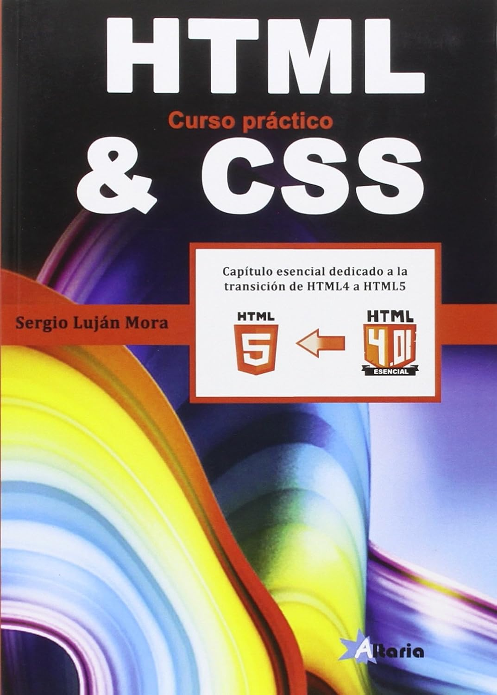

Aunque los inicios de Internet se remontan a los años sesenta, no ha sido hasta los años noventa cuando, gracias a la Web, se ha extendido su uso por todo el mundo. En pocos años, la Web ha evolucionado enormemente: se ha pasado de páginas sencillas, con pocas imágenes y contenidos estáticos que eran visitadas por unos pocos usuarios a páginas complejas, con contenidos dinámicos que provienen de bases de datos y que son visitadas por miles de usuarios al mismo tiempo.
Todas las páginas están internamente construidas con la misma tecnología, con el Lenguaje de marcas de hipertexto (Hypertext Markup Language, HTML) y con las Hojas de estilo en cascada (Cascading Style Sheets, CSS).
Este libro es adecuado para cualquiera que tenga interés en aprender a desarrollar sus propias páginas web. No son necesarios conocimientos previos para aprender con este libro, lo único que es necesario es saber utilizar un ordenador y saber navegar por la Web.
| Teal | Teal | Teal | Teal |
| Red | Red | Red | Red |
| Blue | Blue | Blue | Blue |
| Orange | Orange | Orange | Orange |
| Purple | Purple | Purple | Purple |
| Olive | Olive | Olive | Olive |
| Fuchsia | Fuchsia | Fuchsia | Fuchsia |
| Green | Green | Green | Green |
|
Aunque los inicios de Internet se remontan a los años sesenta, no ha sido hasta los años noventa cuando, gracias a la Web, se ha extendido su uso por todo el mundo. En pocos años, la Web ha evolucionado enormemente: se ha pasado de páginas sencillas, con pocas imágenes y contenidos estáticos que eran visitadas por unos pocos usuarios a páginas complejas, con contenidos dinámicos que provienen de bases de datos y que son visitadas por miles de usuarios al mismo tiempo. Todas las páginas están internamente construidas con la misma tecnología, con el Lenguaje de marcas de hipertexto (Hypertext Markup Language, HTML) y con las Hojas de estilo en cascada (Cascading Style Sheets, CSS). Este libro es adecuado para cualquiera que tenga interés en aprender a desarrollar sus propias páginas web. No son necesarios conocimientos previos para aprender con este libro, lo único que es necesario es saber utilizar un ordenador y saber navegar por la Web. |
 |
El contenido de este libro se estructura en tres apartados bien diferenciados:
Aunque los inicios de Internet se remontan a los años sesenta, no ha sido hasta los años noventa cuando, gracias a la Web, se ha extendido su uso por todo el mundo. En pocos años, la Web ha evolucionado enormemente: se ha pasado de páginas sencillas, con pocas imágenes y contenidos estáticos que eran visitadas por unos pocos usuarios a páginas complejas, con contenidos dinámicos que provienen de bases de datos y que son visitadas por miles de usuarios al mismo tiempo.
Todas las páginas están internamente construidas con la misma tecnología, con el Lenguaje de marcas de hipertexto (Hypertext Markup Language, HTML) y con las Hojas de estilo en cascada (Cascading Style Sheets, CSS).
Este libro es adecuado para cualquiera que tenga interés en aprender a desarrollar sus propias páginas web. No son necesarios conocimientos previos para aprender con este libro, lo único que es necesario es saber utilizar un ordenador y saber navegar por la Web.
El contenido de este libro se estructura en tres apartados bien diferenciados: